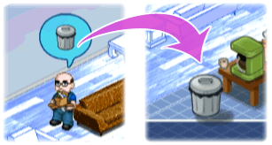

15 |
Items van bouwfase |
 |
Afval
Wanneer arbeiders klaar zijn met het bouwen van een stuk meubilair, hebben zij een vuilniszak in hun handen.
Als je het afval wilt weggooien, moet je met de Wii-afstandsbediening op de arbeider richten en de A-knop ingedrukt houden om de vuilniszak op te pakken.
Plaats de vuilniszak op de vuilnisemmer en laat de zak in de emmer vallen door op de A-knop te drukken.

Energiemeter van arbeiders opvullen 
Arbeiders worden langzamerhand moe en lassen lange pauzes in als je ze niet goed helpt.
Voorkom dat je arbeiders moe worden door ze koffie te geven.
Richt de Wii-afstandsbediening op de koffiepot en houdt de A-knop ingedrukt om de pot op te pakken.
Zet de koffiepot op de arbeider en laat de A-knop los om koffie in te schenken.
Verbanddoos
Wil je ze sneller verbinden, dan richt je de Wii-afstandsbediening op de gewonde arbeider, houd je de B-knop ingedrukt en doe je de in de gereedschapskist getoonde beweging na. |
 Pak de verbanddoos aan de rechterkant van het scherm en sleep deze naar de arbeider om dit te doen.
Pak de verbanddoos aan de rechterkant van het scherm en sleep deze naar de arbeider om dit te doen. |
 |
 |